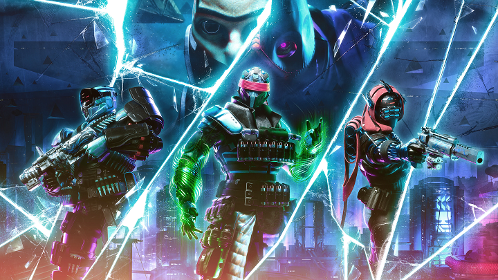
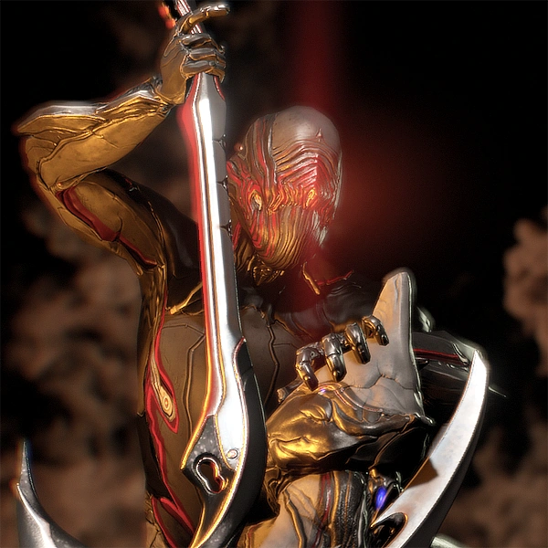

Looter shooter játékok
A loot and shooter játékok, azaz grindolós játékok lényege minél jobb karakter és csapatfelállítással egyre nagyobb és erősebb ellenfelek legyőzése a zsákmányok érdekében. Így erősödik a karakter hogy mégerősebb ellenfeleket győzhessen le mégjobb zsákmányhoz való hozzáférésért.
Destiny 2
Új season
A detsiny 2-nek új szezonja van, ami a Season of Wish, a Final Shape kiegészítőjére való előkészítés, amiben az ahamkarák, azaz a kívánságsárkányok felé fordulunk segítségért. Megegyezünk hogy segítenek, feltéve ha megszerezzük az összes elveszett tojásukat, hogy újraéleszthessék hadokló fajukat. Az egyik új 3 játékos tevékenysége a Dreaming City alatt elterülő hatalmas alvilágban zajlik. Célja, hogy kikerüld a csapdákat, és legyőzd a hatalmas ellenségeket annak érdekében, hogy megszerezzétek Riven, az egyik ahamkara utolsó, megszennyezetlen tojásait, cserébe a tizenötödik kívánságot teljesíti.

A jelenlegi expansion
A Lightfall destiny 2 legújabb expansion-je. Itt meglátogatjuk a Neptunuszt annak érdekében, hogy Calust, az egyik főgonoszt megállítsuk és megmentsük Neptunusz lakosait. Küldetésünk közben viszont rábukkanunk egy új, ez előtt nem ismert erőre, ami a valóságot összetartó szövet. Utunk során elsajátítjuk ezt az erőt, hogy legyőzhessük vele Calust.

Az előző expansion
A Witch Queen volt az előző expansion, ami egy hatalmas siker volt. Sok új tevékenységet és egészséges változtatásokat hozott be a játékba, emellett érdekes módon folytatta a történetet. Kifejezetten pozitívan fogadta a játékosok nagysága. Emellett itt fedték fel a játék új főellenségét, a Witness-t
Warframe

Új season
Warframe egy ingyenesen játszható, akció-orientált sci-fi szerepjáték (RPG), melyet a Digital Extremes fejlesztett és kiadott. A játék a jövőben játszódik, ahol a játékosok a Tenno nevű harcosok bőrébe bújva küzdenek különböző frakciók ellen, miközben különböző bolygókon és űrállomásokon kalandoznak. A Tenno-k egyfajta bio-mechanikus harcosok, akiket évezredekig alszik, majd felébresztenek, hogy harcoljanak az univerzum fenyegetéseivel szemben. A játékosok kiválaszthatják a saját Tenno-jukat, és testre szabhatják őket különböző fegyverekkel, páncélzattal és képességekkel. A játék központi elemei közé tartozik a kooperatív többjátékos mód, ahol a játékosok csapatot alkotva együtt harcolnak a küldetéseken és az életveszélyes ellenfelek ellen. Emellett a játéknak van egy nyílt világú része is, amely lehetővé teszi a játékosok számára, hogy szabadon fedezzék fel a különböző bolygókat, csatákba lépjenek, és kereskedjenek más játékosokkal. Warframe egy dinamikus és folyamatosan fejlődő játék, amely rendszeres frissítéseket kap új tartalommal, küldetésekkel és funkciókkal. A játéknak hatalmas és elkötelezett rajongótábora van, és számos díjat és elismerést nyert a megjelenése óta.

A jelenlegi expansion
A Lightfall destiny 2 legújabb expansion-je. Itt meglátogatjuk a Neptunuszt annak érdekében, hogy Calust, az egyik főgonoszt megállítsuk és megmentsük Neptunusz lakosait. Küldetésünk közben viszont rábukkanunk egy új, ez előtt nem ismert erőre, ami a valóságot összetartó szövet. Utunk során elsajátítjuk ezt az erőt, hogy legyőzhessük vele Calust.
Deep rock galactic
Diablo V